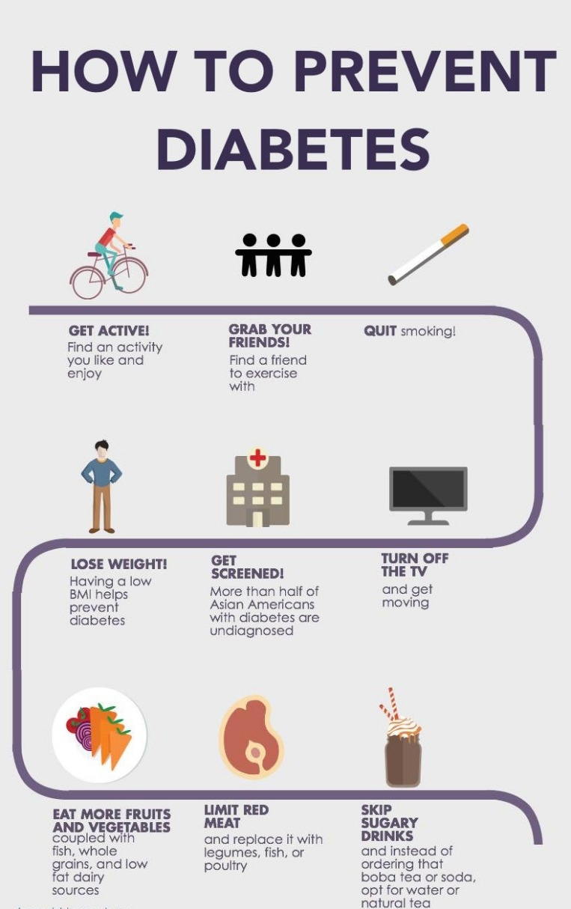

The precautions you should take to avoid diabetes are:
- Be more physically active and cut the extra weight in your body by avoiding more intake and doing exercises.
- Don't eat more carbohydrates food.
- Never postpone your visit to the doctor when you are facing some health issues and get normal check up regularly.
- Avoid sleeping more time because it makes you to eat more.
- Manage your stress and work accordingly.
- Eat a variety of healthy, fiber-rich plant foods and take more vegetables and fruits instead of high carb foods.
- QUit smoking and monitor your alcohol level
- Keep your blood pressure and cholesterol under control
- Schedule regular physicals and eye exams
- Keep your vaccines up to date such as flu vaccine, pnemonia vaccine, hepatitis B vaccine and others.
- Test your sugar level at least once a day using a glucometer.
- Make a commitment to managing your diabetes
- Always carry a small chocolate with you and it will be used when your sugar level drops
- Consider taking a low dose of aspirin every day to help reduce your risk of heart attack and stroke.
- Reverse your diabetes before it is too late
- Fatty foods are high in calories and should be eaten in moderation.
The precautions you should take post diabetes:
